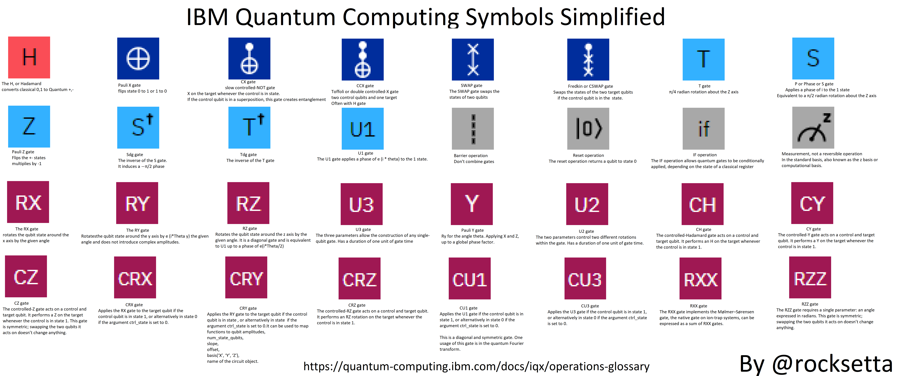

<h2 align=center> @Rocksetta finding out about Quantum Computing</H2>
Note: Trying to Train a Tensorflowjs Machine Learning xOr model my easiest I teach but using a quantum computer to do the training.
Probably not going to be successful, but that doesn't mean we don't try. We will deffinitely learn some cool things!<br>

<li> My Github at  <a href="https://github.com/hpssjellis/tfQuantumJs">https://github.com/hpssjellis/tfQuantumJs</a>


<li> Github at  <a href="https://www.rocksetta.com/tensorflowjs/beginner-keras/20keras-xOr.html">original xOr</a>
<li> Github at  <a href="xor01.html">xor01.html</a>
<li> Github at  <a href="xor02.html">xor02.html</a>
<li> Github at  <a href="xor03.html">xor03.html</a>
<li> Github at  <a href="https://quantumjavascript.app/">Original QuantumJavascript.app</a>
<li> Github at  <a href="qjs01.html">qjs01.html</a>
<li> Github at  <a href="qjs02.html">qjs02.html</a>
<li> Github at  <a href="qjs03.html">qjs03.html</a>
<li> Github at  <a href="...">...</a>
<li> Github at  <a href="...">...</a><br><br>

  
  
  <br><br>
  <br><br>
  
  
  
  
  Below is the same as what is at <a href="ibm-quantum-symbols.html">ibm-quantum-symbols.html</a><br>
  
  <a href="https://www.ibm.com/quantum-computing">IBM actual quantum computer</a><br>
  <a hfre="https://quantum-computing.ibm.com/login">Login IBM Quantum Computing</a><br><br>


  Documentation:<a href="https://quantum-computing.ibm.com/docs/iqx/operations-glossary">Symbols Explained</a> 
  
  

  <br>
  <br>
  
  
  <style>
* {box-sizing: border-box;}

.img-zoom-container {
  position: relative;
}

.img-zoom-lens {
  position: absolute;
  border: 1px solid #d4d4d4;
  /*set the size of the lens:*/
  width: 100px;
  height: 40px;
}

.img-zoom-result {
  border: 1px solid #d4d4d4;
  /*set the size of the result div:*/
  width: 900px;
  height: 450px;
}
</style>
<script>
function imageZoom(imgID, resultID) {
  var img, lens, result, cx, cy;
  img = document.getElementById(imgID);
  result = document.getElementById(resultID);
  /*create lens:*/
  lens = document.createElement("DIV");
  lens.setAttribute("class", "img-zoom-lens");
  /*insert lens:*/
  img.parentElement.insertBefore(lens, img);
  /*calculate the ratio between result DIV and lens:*/
  cx = result.offsetWidth / lens.offsetWidth;
  cy = result.offsetHeight / lens.offsetHeight;
  /*set background properties for the result DIV:*/
  result.style.backgroundImage = "url('" + img.src + "')";
  result.style.backgroundSize = (img.width * cx) + "px " + (img.height * cy) + "px";
  /*execute a function when someone moves the cursor over the image, or the lens:*/
  lens.addEventListener("mousemove", moveLens);
  img.addEventListener("mousemove", moveLens);
  /*and also for touch screens:*/
  lens.addEventListener("touchmove", moveLens);
  img.addEventListener("touchmove", moveLens);
  function moveLens(e) {
    var pos, x, y;
    /*prevent any other actions that may occur when moving over the image:*/
    e.preventDefault();
    /*get the cursor's x and y positions:*/
    pos = getCursorPos(e);
    /*calculate the position of the lens:*/
    x = pos.x - (lens.offsetWidth / 2);
    y = pos.y - (lens.offsetHeight / 2);
    /*prevent the lens from being positioned outside the image:*/
    if (x > img.width - lens.offsetWidth) {x = img.width - lens.offsetWidth;}
    if (x < 0) {x = 0;}
    if (y > img.height - lens.offsetHeight) {y = img.height - lens.offsetHeight;}
    if (y < 0) {y = 0;}
    /*set the position of the lens:*/
    lens.style.left = x + "px";
    lens.style.top = y + "px";
    /*display what the lens "sees":*/
    result.style.backgroundPosition = "-" + (x * cx) + "px -" + (y * cy) + "px";
  }
  function getCursorPos(e) {
    var a, x = 0, y = 0;
    e = e || window.event;
    /*get the x and y positions of the image:*/
    a = img.getBoundingClientRect();
    /*calculate the cursor's x and y coordinates, relative to the image:*/
    x = e.pageX - a.left;
    y = e.pageY - a.top;
    /*consider any page scrolling:*/
    x = x - window.pageXOffset;
    y = y - window.pageYOffset;
    return {x : x, y : y};
  }
}
</script>


<p>Mouse over the image:</p>

<div class="img-zoom-container">
  
  <div id="myresult" class="img-zoom-result"></div>
</div>


<script>
// Initiate zoom effect:
imageZoom("myimage", "myresult");
</script>
  
  
  <br>
  <br>
<br>
  
  <h6>Disclaimer:<br>
    Use at your own risk.<h6>
